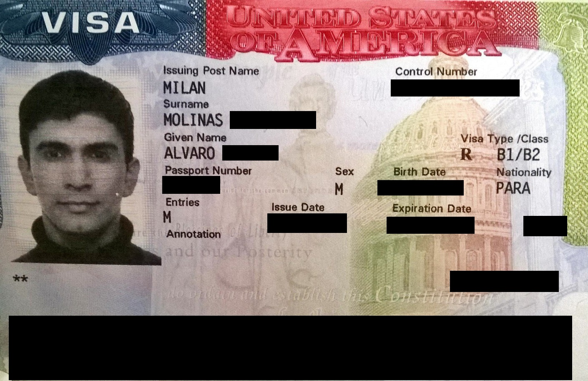

The US F-1 student visa: how it works, step by step
What the F-1 academic student visa is and how it differs from M-1 and J-1; the steps from admission (Form I-20) to visa issuance (the $350 SEVIS I-901 fee, DS-160, the $185 visa fee, the interview); the proof-of-funds requirement; work rules (20 hours/week on campus, CPT, 12 months of OPT, a further 24 months for STEM); duration of status (D/S) and the 60-day grace period; and F-2 dependents. Based on the US Department of State, USCIS, and ICE (SEVP), as of September 2026.

The F-1 is the nonimmigrant visa for full-time academic study in the United States (at a college, university, school, or language program). Below, what it is, the steps to obtain it, the work rules, and duration of status are explained with facts, based on the official information of the US Department of State (travel.state.gov), USCIS and ICE (the Student and Exchange Visitor Program, SEVP) within the Department of Homeland Security (DHS). All figures are as of September 2026.
F-1 vs M-1 vs J-1
F-1 is for academic degree and language programs; the school must be SEVP-certified. M-1 is for vocational (technical, trade) programs; M-1 students generally may not work during their studies. J-1 is for exchange programs run by the Department of State (BridgeUSA) and requires a designated sponsor; some J-1 categories carry a two-year home-country presence requirement (INA 212(e)). In short: F-1 for academic study, M-1 for vocational, J-1 for sponsored exchange.
The step-by-step process
1) You are admitted to an SEVP-certified school, which enters you into SEVIS and issues Form I-20 (the certificate of eligibility for student status). 2) You pay the I-901 SEVIS fee — $350 for F-1 (via FMJfee.com); keep the receipt. 3) You complete the online DS-160 application, entering the SEVIS ID from your I-20. 4) You pay the visa application (MRV) fee — $185 for the F/M/J categories. 5) You attend an interview at a US embassy or consulate. 6) If approved, the F-1 visa is placed in your passport. You may enter the US up to 30 days before the program start date on the I-20. The two mandatory government fees total $535 ($350 + $185); school and third-party costs are separate.
Proof of funds
Applicants must show sufficient funds to cover tuition and living costs, generally for at least the first academic year. The required estimate is stated on the Form I-20 and varies by school and program — there is no single government-set figure. Evidence may include bank statements, a sponsor's affidavit, or a scholarship or loan approval.
Work rules
On-campus work: up to 20 hours a week while school is in session, and full-time during breaks. CPT (Curricular Practical Training) is training that is an integral part of the curriculum; but 12 or more months of full-time CPT eliminates OPT eligibility. OPT (Optional Practical Training) provides up to 12 months of work experience per education level. STEM graduates (science, technology, engineering, mathematics) may add 24 months (up to 36 total), which requires an E-Verify employer and paid work of at least 20 hours a week related to the degree.
Duration of status (D/S) and the grace period
F-1 students are usually admitted for “duration of status” (D/S) — that is, not a fixed end date but the length of the program plus authorized training. After the program (or OPT) ends, a 60-day grace period is granted to depart, change status, or continue studies. Being outside the US for five or more consecutive months generally terminates F-1 status (apart from authorized study abroad). Note: in 2026 DHS proposed replacing D/S with fixed periods; that rule is in litigation and, as of September 2026, has not taken effect, so D/S remains in force.
F-2 dependents
An F-1 student's spouse and unmarried children under 21 may accompany them in F-2 status. F-2 dependents may not work under any circumstances. F-2 children may attend K-12 school full-time; F-2 spouses and children may study only part-time at the post-secondary level — full-time study requires switching to their own F-1 or other status.
Which agencies are responsible
ICE and its SEVP within DHS certify schools, run SEVIS, and collect the I-901 fee. USCIS adjudicates OPT/STEM OPT (Form I-765), reinstatement, and change of status. The US Department of State's Bureau of Consular Affairs (embassies/consulates) takes the DS-160, collects the MRV fee, conducts interviews, and issues the visa. CBP admits the student at the border and issues the I-94.